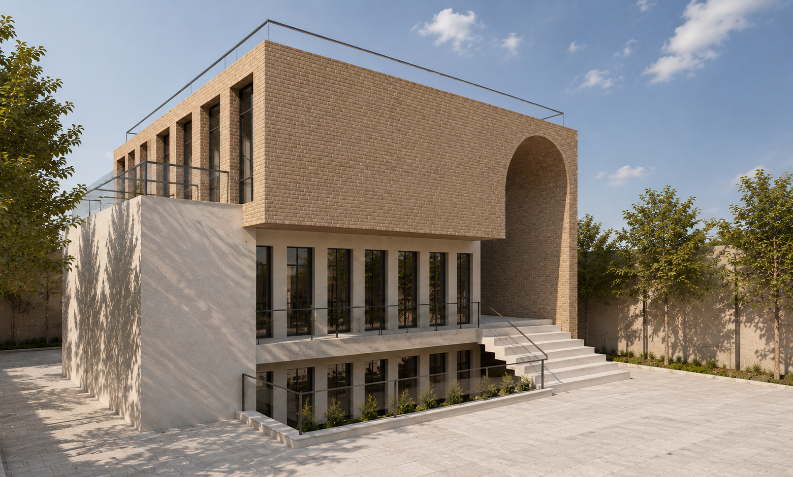
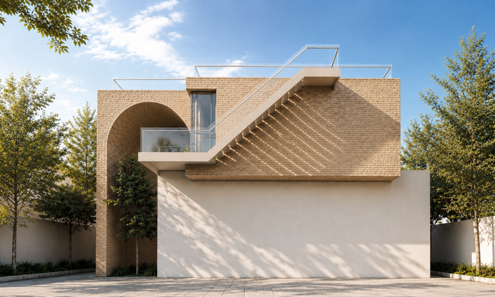
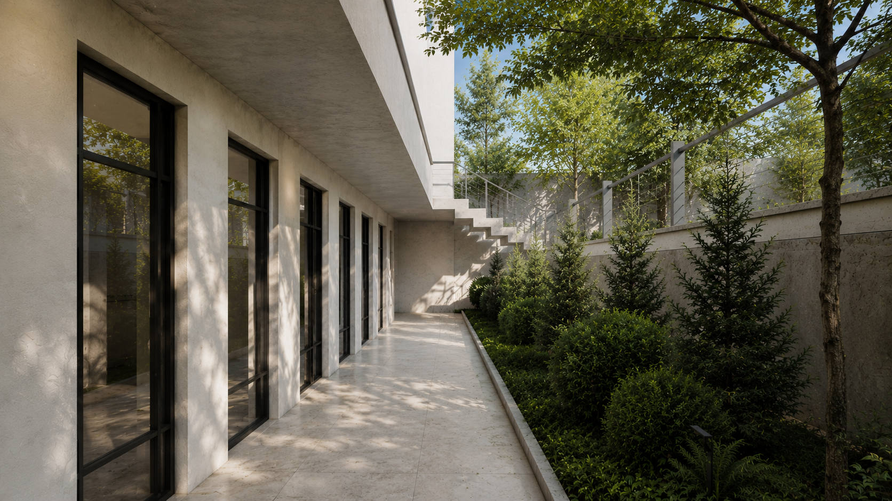

Residential Architecture

Location
Year
Scope
Ravagh Villa draws its identity from the architectural heritage of Shiraz, reinterpreting traditional principles through a contemporary lens. The design is rooted in the region's history while responding to the local climate, creating a home that feels both timeless and deeply connected to its surroundings. The villa is constructed using handmade bricks produced locally from the area's natural clay. This traditional material has been used in the region for generations, offering excellent thermal performance in Shiraz's climate, where hot days are followed by cool nights. The high thermal mass of the brick absorbs heat throughout the day and gradually releases it after sunset, helping to create a naturally comfortable indoor environment while reducing the need for mechanical cooling. The architectural language is inspired by the historic houses of Shiraz. Tall, rhythmically arranged windows establish a balanced façade while maximizing natural light and ventilation. Soft arches reinterpret the traditional taagh, creating a familiar architectural expression that connects the building to its cultural context. The entrance is conceived as a welcoming threshold—a transitional space that gently guides visitors from the public realm into the calm and privacy of the home, echoing the sense of hospitality found in traditional Persian houses. By combining local craftsmanship, climate-responsive materials, and architectural elements rooted in Shiraz's rich heritage, Ravagh Villa creates a contemporary living environment that celebrates both place and tradition.


